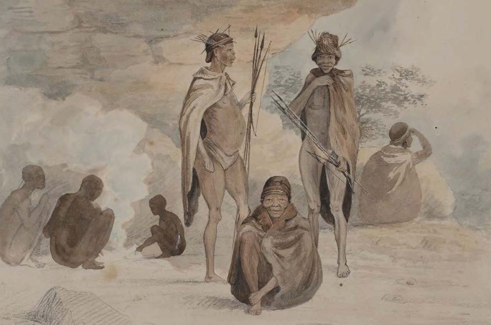

PROJECT ||EI!NASI
Our course is focused purely on indigenous narratives, with more than 15 years of in-depth research, combined with old accounts, this projects is specifically designed for those who beloieve it in their hearts tha there has to be more to our story! For the advancement of indigenous knowledge systems, revival of our people's indigenous awareness and pride, learning, documentation, narrating, and mapping indigenous isiNtu-Khwe-!Kwi-Tuu languages, and expressly showcasing their necessity and relevance in the present as well as the future, this programme exists. Come unlearn, learn, and grow with us.
Fee: R300 per month Enroll now